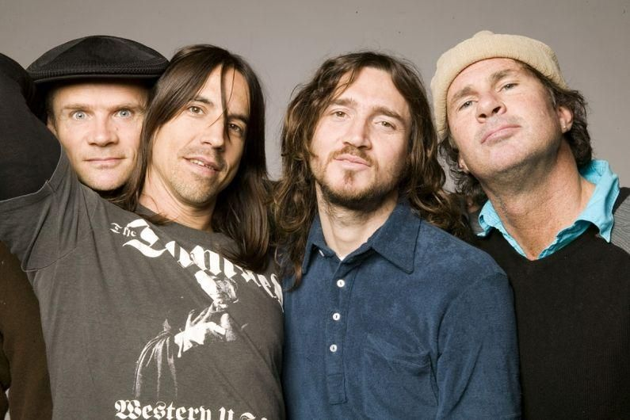

História
1983–1984: Formação e primeiro álbum
O Red Hot Chili Peppers tem raízes desde 1979, nos intervalos entre aulas da Fairfax High School, em Hollywood, Los Angeles. Os garotos de 15 anos, Flea, Hillel Slovak e Jack Irons eram três amigos que tinham algumas ambições musicais formando a banda chamada Anthym. Um dos grandes admiradores dessa banda era Anthony Kiedis, também amigo de infância de Flea, Hillel e Irons.
Veja: Formação da Banda.
Em fevereiro de 1983, a banda Gary and Neighbour's Voices iria tocar no clube Rhythm Lounge em Los Angeles e o vocalista Gary Allen sugeriu que Anthony Kiedis, juntamente com Flea e Hillel Slovak, realizassem a abertura do show para banda. Eles então fundaram uma banda chama "Tony Flow e os Miraculous Masters of Mayhem", porque de acordo com Anthony: "era assim que queríamos tocar, majestoso e caótico". Eles adicionaram Jack Irons na bateria.
A banda tocou para um público de 30 pessoas e a apresentação envolveu com uma improvisando enquanto Kiedis cantava rap de um poema que ele havia escrito, chamado "Out in LA". Slovak e Irons já estavam comprometidos com outro grupo, What Is This?, que se destinava a ser uma performance única. No entanto, o desempenho foi tão animado que a banda foi convidada a voltar na semana seguinte. Eles estão escreveram mais uma música chamada "Get Up and Jump”, baseado na relação de Hillel com uma garota chamada Rona Frumpkin e depois, devido ao sucesso inesperado, a banda mudou seu nome para The Red Hot Chili Peppers, escrevendo mais músicas para seu repertório e tocando em vários shows nos clubes de Los Angeles. A explicação para o nome vem de um improviso de Anthony Kiedis que conta: "Eu estava caminhando em Hollywood Hills e vi esse nome piscando num arbusto psicodélico" (o arbusto era em formato de pimenta), mas essa história parece muito mais uma lenda ou piada de Anthony, do que a verdadeira história. O que parece ser mais próximo da realidade é que eles adoravam comida mexicana com bastante pimenta (chili), Flea era fã da banda de apoio de Louis Armstrong "Red Hot Peppers" e Anthony Kiedis não poderia esquecer o nome da banda que tocou num pub em Londres, a "Chili Willy and the Red Hot Peppers". Seis canções desses shows iniciais foram na fita da banda primeira demo, que os tornaram famosos.